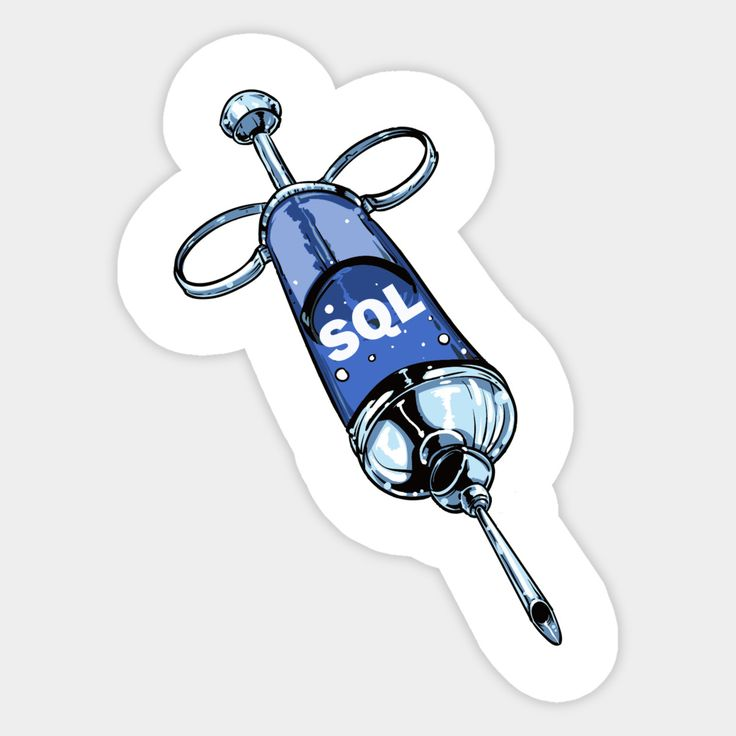

Hello there, I'm Shani Sitton, a tech whizz with over 6 years of hands-on experience in Cybersecurity. Specializing in identifying vulnerabilities, I possess the expertise to thoroughly assess and address all 10 common vulnerabilities found in sites,
particularly in platforms like Bugcrowd bounty. My proficiency extends to utilizing advanced tools such as Nmap for comprehensive networking analysis and Metasploit for thorough vulnerability checks.
Currently pursuing a BA in Business Administration and Computer Information Systems, I am enrolled in an accelerated program at Western Governors University. Simultaneously, I am working towards a Master's degree, further
expanding my knowledge in the dynamic field of Information Technology. I am eager to bring my skills and dedication to a dynamic team, contributing to the ever-evolving landscape of cybersecurity.
Best regards, Shani Sitton

As a seasoned cybersecurity professional with over 6 years of expertise. My focus lies in identifying and mitigating various vulnerabilities, including: 1. SQL injection 2. Cross-site scripting (XSS) 3. Insecure direct object references (IDOR) 4. Cross-site
request forgery (CSRF) 5. Security misconfigurations 6. Lack of input validation 7. Unvalidated redirects and forwards 8. Broken authentication and session management 9. Server-side request forgery (SSRF) 10. XML External Entity
(XXE) attacks In my role, I've been entrusted to assess the security of companies, including CFR sites, uncovering potential threats that could jeopardize critical data. My experience involves orchestrating controlled and ethical
vulnerability assessments, utilizing tools like Nmap for networking analysis and Metasploit for comprehensive vulnerability checks. Currently pursuing a BA in Business Administration and Computer Information Systems, I am enrolled
in an accelerated program at Western Governors University. Simultaneously, I am working towards a Master's degree, showcasing my commitment to continuous learning and professional development. I am eager to bring my expertise in
identifying and addressing vulnerabilities to contribute to the robust cybersecurity of organizations. Best regards, Shani Sitton Email: Shaniaworks@gmail.com
As a seasoned cybersecurity professional with over 6 years of expertise. My focus lies in identifying and mitigating various vulnerabilities, including: 1. SQL injection 2. Cross-site scripting (XSS) 3. Insecure direct object references (IDOR) 4. Cross-site
request forgery (CSRF) 5. Security misconfigurations 6. Lack of input validation 7. Unvalidated redirects and forwards 8. Broken authentication and session management 9. Server-side request forgery (SSRF) 10. XML External Entity
(XXE) attacks In my role, I've orchestrated controlled and ethical vulnerability assessments, utilizing tools such as Nmap for comprehensive networking scanning, Burp Suite for web application analysis, and Metasploit for thorough
vulnerability checks. Networking scanning involves employing Nmap to discover devices on a network, analyze their configurations, and identify potential vulnerabilities. Additionally, Burp Suite assists in analyzing web application
security, detecting issues like SQL injection and XSS. To enhance security, ethical hacking plays a crucial role. I employ password-cracking techniques such as John the Ripper to assess the strength of password policies and
identify potential weaknesses. My commitment to ethical hacking stems from the essence of mitigating the dangers we all face in the online world. By identifying vulnerabilities and employing ethical practices, I aim to contribute
to a safer and more secure digital environment. Currently pursuing a BA in Business Administration and Computer Information Systems, I am enrolled in an accelerated program at Western Governors University. Simultaneously, I
am working towards a Master's degree, showcasing my commitment to continuous learning and professional development. I am eager to bring my expertise in identifying and addressing vulnerabilities to contribute to the robust
cybersecurity of organizations. Best regards, Shani Sitton